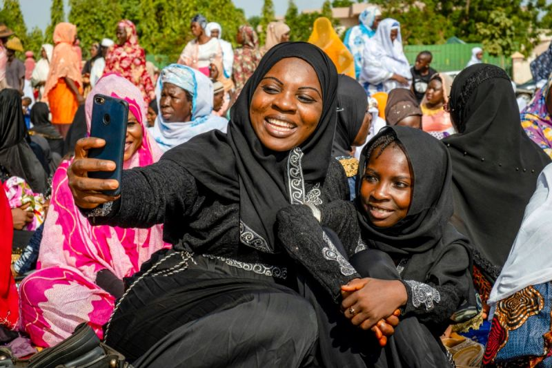

사역
찾아가기 어려운 곳의 지도자에게도 닿는 배움과 상담입니다.

어떤 지역은 직접 찾아가 훈련하기 어렵습니다. 온라인 훈련과 상담은 그 문을 닫지 않고, 현지 지도자가 있는 자리에서 배우게 합니다.
이동이 제한되거나 위험이 큰 곳의 지도자는 훈련 센터에 오기 어렵습니다. 배움이 끊기면 고립되고, 사역도 흔들립니다.
새 훈련 내용을 만들고 기존 자료를 번역해, 웹과 앱으로 제공합니다. 상담은 앱을 쓰는 사람이 필요할 때 이야기할 수 있게 합니다.
거리가 걸림이 되지 않습니다. 직접 갈 수 없는 곳의 리더도 훈련을 이어 갑니다.
현지 언어로 닿습니다. 번역된 자료가 있어야 배움이 실제가 됩니다.
혼자 두지 않습니다. 상담은 훈련 뒤에도 리더가 흔들리지 않게 돕습니다.